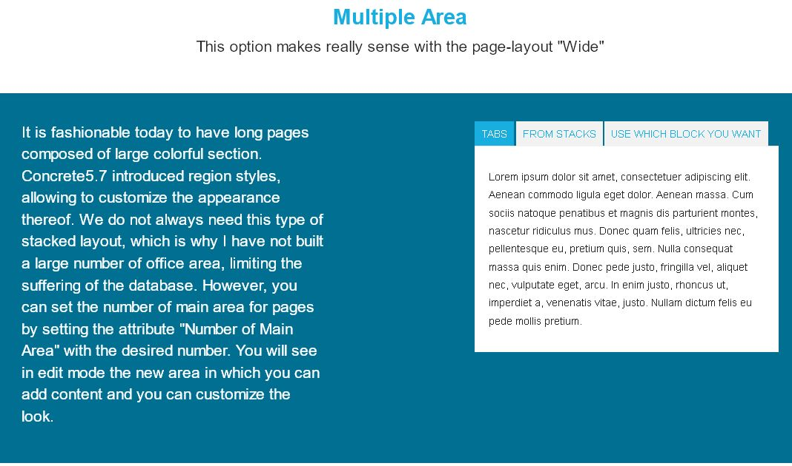
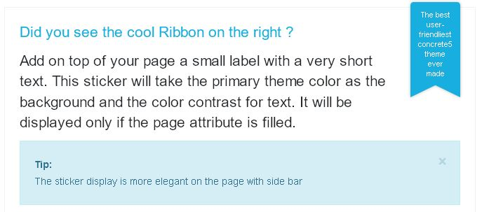

Page customization¶
Customize pages in many ways.
Discover how to personalize a page¶
Page Color¶
See in the top menu, and in some template navigation , a color that is assigned to pages. By default, the selected color is the primary theme color. Assign colors individually for each page by changing the attribute Main Page Color.
[Sc: The attribute main_page_color]
Page Icon¶
Change the default icon for all pages or for each page separately.
To change the default icon applied to all pages
Reference the theme options page Slide Navigation section to change the related option .
To change the icon of the pages separately
Edit the attribute of the page in question and choose an icon with the attribute Icon From FontAwesome.
Miniature¶
The miniature pages are used in Supermint inpage-list. This file dimension are adapted as required, so no need to resize the image, the theme will do it. To assign an image to a page, fill the Thumbnail attribute of this page with a valid image.
Background image of a page
With Supermint, it is possible to add a background image to a page. In order to have a background image, simply fill in the attribute “background page” in property page.
Note
If the page is not in “Boxed” do not hesitate to use area classes that will give a pleasing background color.
Background image slideshow¶
It is also possible to add multiple background images on a page. For this create a file set that will contain all the desired images and choose the file group with the page attribute background slider in properties of page. It might be possible to set a default file for all pages. <background image slider example missing>
Apply a preset option¶
If different options settings are needed for all pages, or for a particular page, simply create a page preset and apply through the attribute Supermint theme Option Preset.
Multiple Main Area¶
It is fashionable today to have long pages composed of large colorful section. Concrete5 introduced Area styles, allowing to customize the appearance thereof. We do not always need this type of stacked layout, which is why I have not built a large number of office area, limiting the suffering of the database. Set the number of main area for data pages by setting the attribute Number of Main Area with the desired number. In edit mode see the new area where content can be added and customized.
{kind=link}
Colorful Sticker¶
Add on top of the page a small label with a very short text. This sticker will take the primary theme color as the background and the color contrast for text. It will be displayed only if the page attribute is filled. To display the sticker, fill the attribute Text for the Ribbon with a short sentence:
The sticker display is more elegant on the full page or side bar page template.
{kind=link}
{kind=link}